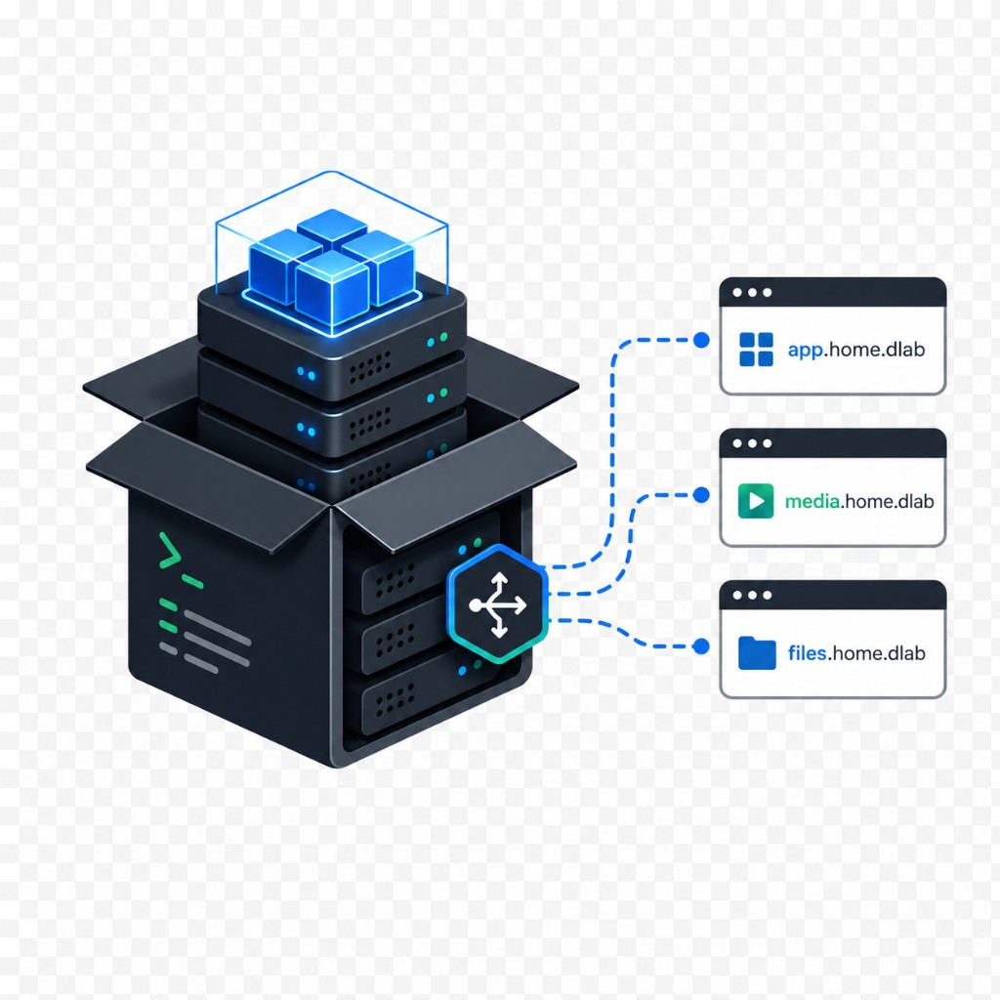

QDROdl
A legal-tech web app for generating QDRO/DRO document packages with a focus on standardized workflows, structured intake, and lower-cost document preparation.
Builder · IT generalist · Legal-tech · Homelab
I build practical web, infrastructure, automation, and homelab projects.
Legal-tech founder, IT generalist, and self-hosting builder working across web apps, Chrome extensions, Docker, networking, and automation.
Connect
A few of my current projects, from legal-tech automation to Chrome extensions and self-hosting tools.
A legal-tech web app for generating QDRO/DRO document packages with a focus on standardized workflows, structured intake, and lower-cost document preparation.

A self-hosting starter project for deploying useful Docker services on a small VPS or homelab host with practical instructions for Cloudflare, Docker Compose, Traefik, and secure access.
A local technical consulting site for hands-on computer, network, website, and small business tech support.

A Chrome extension for organizing YouTube tabs into useful collections, reducing tab clutter, and building a better YouTube research/library workflow.
A browser session and project organization tool inspired by OneTab, expanded around saving tabs, project context, and local-first organization.

Networking study notes focused on routing, switching, subnetting, and practical CCNA review.
My homelab is where I test real infrastructure ideas before turning them into documentation, services, or deployable projects. It includes VLANs, pfSense, Proxmox, Unraid, Docker, Cloudflare tunnels, backups, and self-hosted services.
View Homelab DiagramI like building systems that are understandable, recoverable, and useful. My work sits between software, infrastructure, legal automation, and practical IT support.
Command Line Bio